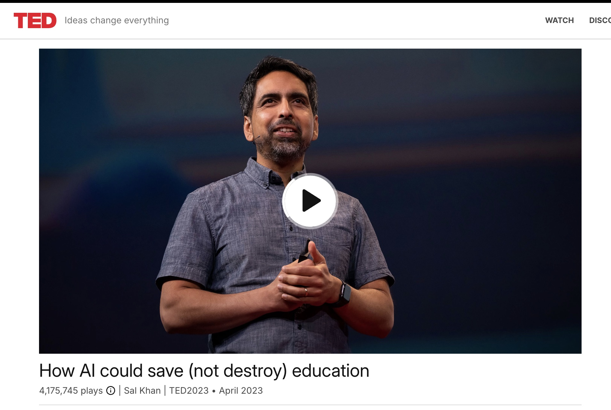
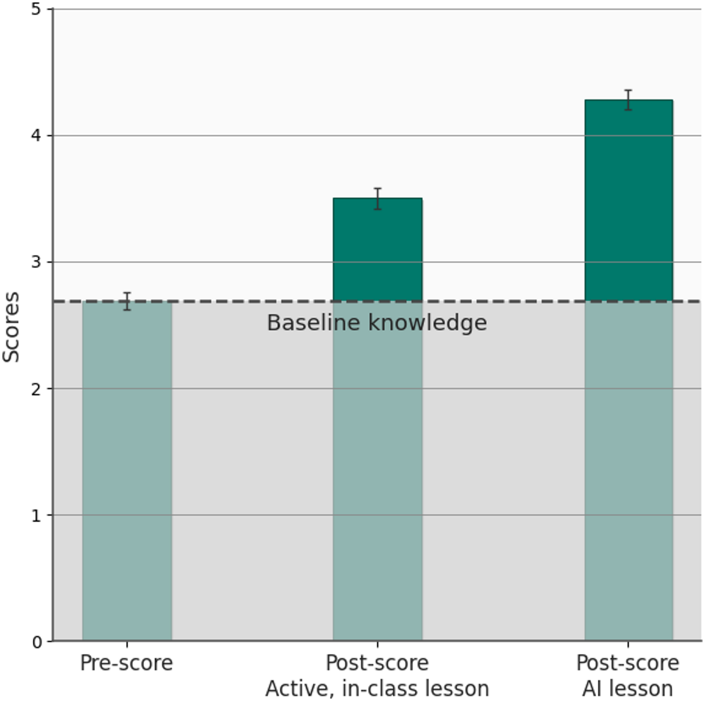
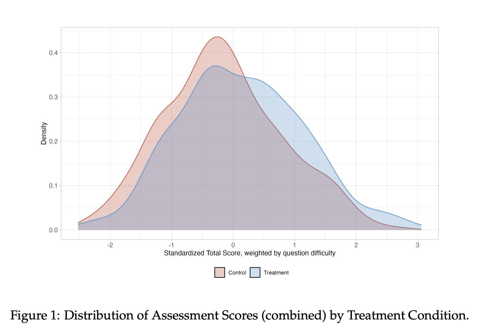
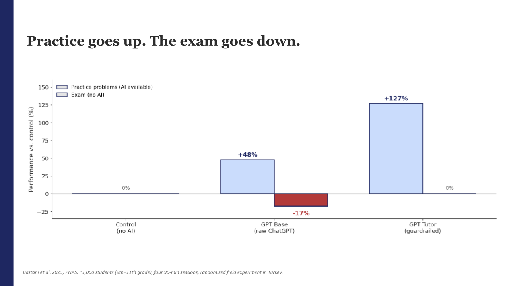
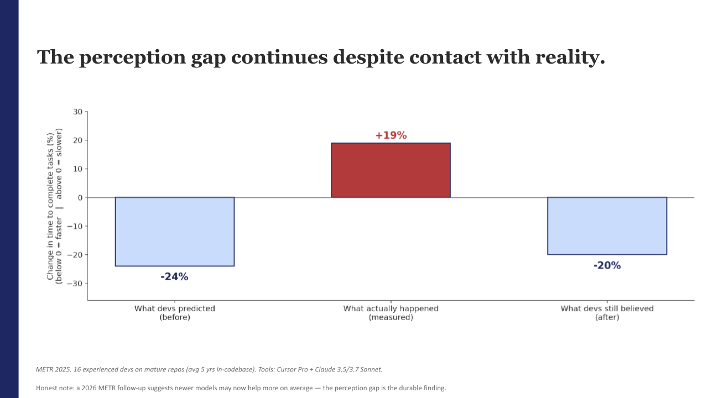
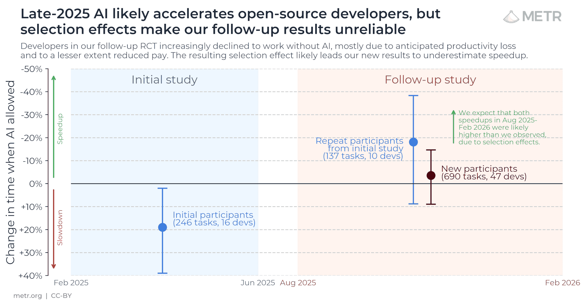

Over the last few months, I have been trying to read every study on AI and cognitive behavioral science I can find time for, with the goal of creating resources for parents, teachers, and students on what we actually know about AI today.
While I've found some clear patterns and helpful vocabulary through my reading, I am still shocked at how little we actually know about AI, how people interface with it, and the cognitive consequences.
What makes this even more difficult is that research in education is especially tricky. There is typically a huge implementation valley between what shows up in research and what survives contact with real-world schools. For example, Reading First was a $6 billion investment in the NCLB era that produced almost no measurable student outcomes despite prior studies showing impact and the fact that it was implemented reasonably well.
This is all to say that the findings that I lay out below are humble evaluations of what we can actually claim based on the research, in full knowledge that these takeaways will constantly be updating.
The optimistic case
If you're in education or have children of school age, you're probably aware of the most optimistic promise of AI. Sal Khan took the stage in 2023 to promise that Khanmigo, an AI tutor, would solve "Bloom's two sigma problem" and provide every single student with one-on-one tutoring to help them increase performance.

In the last two years, more than one optimistic meta-analysis of AI educational intervention has put big numbers behind Khan's claim. The most-quoted of them, Wang & Fan (2025), reported that ChatGPT-based educational programs produced .87 standard deviation of improvement.
(For those not familiar with standard deviation, researchers report results as effect sizes, measured in standard deviations, so studies with different units of measurement can be compared on one scale. According to Kraft (2020), a 0.50 standard deviation is supposed to be visible in the classroom, so the claim of over 0.80 is significant.)
However, this 2025 meta-analysis paper was retracted in April 2026 "due to discrepancies in the meta-analysis" that "undermine confidence... in the validity of the analysis and resulting conclusions." I bring this up to highlight how shaky some of this evidence is, while we focus on the most trustworthy.
There are two other meta-analyses that have not been withdrawn and show a positive standard deviation in measuring the impact of AI-powered educational interventions. In 2025, Wang and colleagues pooled 68 studies and found a moderate effect size of about 0.45 standard deviations in AI interventions. And Wu and Yu (2024), pooling 24 randomized studies, found roughly double that, around 0.96.
What is important to keep in mind about these numbers is that Wu and Yu make it plain where the largest impact comes from in their meta-analysis. Short interventions have a greater impact than longer ones, which they attribute to the novelty of the tool. The publication itself has flagged that the short-term results are probably inflated by the well-known novelty effect.
However, knowing the limitations of these studies, it is possible to create a theory of when AI in education is most effective that I'm willing to entertain.
One of the best examples in this body of research is Kestin et al. (2025). A Harvard physics professor who created custom GPTs for his students that replaced two weeks of class. Each custom GPT had a prompt crafted to help the students study that unit without giving away the answers.
Kestin alternated which group of students got to skip class and only engage with the chatbots, and measured the difference in outcomes. His results showed that students learned twice as much by engaging with his custom GPT chatbots as they did in his active-learning classroom.

It's worth pointing out that this study lasted only two weeks and that Kestin was very actively involved in creating tools for his students and in setting classroom expectations for their use. Kestin even gave students time back by canceling class and assigning the chatbot as homework instead.
Another standout example is De Simone et al. (2025), From Chalkboards to Chatbots, a working paper that shows Nigerian students were able to close huge educational gaps in only 6 weeks. While reporting only a 0.3 standard deviation in scores, the paper claims that educators were able to complete "nearly 1.5 years of business-as-usual learning in six weeks" across 9 schools. Again, the intervention was teacher-led, with students working in pairs and receiving expert prompts that pushed them to think more, not less.

So what have we learned in the last few years?
From these meta-analyses and their standout examples, we can see that AI educational interventions have the strongest documented effect when they are short-term, expert-designed, and delivered to higher-ed students. What this means is that AI, at least on its own, does not seem to be living up to Sal Khan's promise to quickly unlock effective 1:1 tutoring for every young person.
We can also look at Khan and his company's shifting attitude toward 1:1 AI. He said in April 2026, "For a lot of students, [Khanmigo] was a non-event." Additionally, he's revised his prediction that 90% of teacher admin tasks would be handled by AI by 2024, now citing 2034 as the year AI would reach that benchmark.
Lastly, people at Khanmigo have publicly admitted that student engagement often looks more like typing "IDK IDK, give me the answer" than thoughtful, meaningful inquiry. Sal himself said in 2024 that "10 to 15%" of students will have the "curiosity and might automatically keep going to the AI [to learn more]", but the rest of the students "are broadly disengaged from what they're doing, and you need to figure out ways to engage them more."
Khanmigo is now heavily promoted as a teacher's assistant rather than just a student's tutor, and their press release and demos for next year are mostly focused on their Learning Management System and teacher-facing AI tools that help deliver existing content to students, not student-facing generative AI.
Even the biggest advocates of AI in Education have had to adjust their approach and acknowledge the limitations of this technology after rushing to be first.
The possible downside to AI intervention
So what's the potential downside of AI-powered interventions beyond students not engaging with the intent to learn? The concern everyone has is cognitive offloading, and there is some data suggesting this might be real, though AI's role in the offloading might be more complicated than it initially appears.
One study provides an easy-to-understand narrative about the potential realities of offloading. Bastani and colleagues divided a group of 1,000 Turkish high school students into three groups.
One group was the control group. They were given practice problems and a test, and their scores were then compared with those of the other two groups.
The second group was given a raw ChatGPT subscription with no pedagogy or requirements for how to use it. They were just told, "Use this tool to study." These students completed 48% more practice problems, but scored 17% worse on the unaided test than the no-AI group. Worth noting that ChatGPT made frequent errors when coaching students through practice problems.
The last group was given what should be the gold standard: an AI tool created by an education expert with guardrails to ensure it provided accurate information and did not reveal answers to students. These students completed twice as many correct practice problems as the control group, making them more productive than both groups. But on the test, they scored almost exactly the same as the control group.

To me, this study highlights a few points that are supported by other research.
One, this shows the danger of trusting AI for the students who were just given raw access to ChatGPT with no guidelines. Those students were given bad advice by AI multiple times throughout the process and seemingly internalized some of its mistakes.
Second, it points out the difference between performance and learning. AI often enables us to perform faster, more reliably, or with expertise beyond our own. But that focus on performance has a cost — in the case of the students with ChatGPT, by itself, they were not able to transfer these skills into an arena without the support. And this isn't a quirk of one Turkish classroom: tracking nearly 27,000 Chinese secondary students over 30 months, Strömberg and colleagues (2026) found the same split at scale — AI use raised homework scores about 18% and cut completion time roughly 30%, while lowering exam scores by 20% within six months, with the damage concentrated among the ~80% of users whose pattern looked like outsourcing homework rather than studying.
AI often enables us to perform faster, more reliably, or with expertise beyond our own. But that focus on performance has a cost.
The third thing is the allure of cognitive offloading, because we feel very productive while we are cognitive offloading. I'm sure the students who were correctly completing twice as many practice problems as their peers felt very productive in the moment. I know from personal experience that having 3 chatbot windows open can create a sense of busyness without the reality of success.
It's possible to argue that the students in the third group were more engaged with the GPT tutor, but as someone who has worked with 9th-grade classrooms before, I don't know if you could easily convince a student to do 2.5 times as many practice problems to achieve the same effect. Most young people have not internalized the difference between performance and learning.
Regardless, evidence from other research suggests that even skilled adults might not perceive the impact AI has on their cognitive processes, making this engagement claim messier.
The 2025 METR study on software developers also supports the view that AI offloading is difficult to measure.
In this test, they recruited open-source software developers and asked them to predict how much time AI would save them on a series of tasks. They collectively said it would save them 24% of their time.

Ultimately, the tasks completed with AI took 20% longer, yet the developers still believed it saved them 20% of their time. While AI tools continue to improve at helping software engineers complete tasks more quickly, it is worth paying attention to this perception gap.
Also of note, when METR tried to rerun the study in 2026, so many engineers declined to do the tasks without AI that selection effects muddied the follow-up — the developers still willing to go AI-free were no longer a representative sample. To me, that shows how fast AI is rewriting the professional standard around performance in software engineering: when developers won't take on a task without the tool, the tool has become part of the job. I'm not an expert in training engineers, but I wonder if we're watching a profession quietly tilt toward valuing performance over learning.

What about how much AI is helping adults?
One thing that complicates determining whether AI can be helpful for learning is that most of the positive findings in AI research come from adults performing in the workplace.
Ethan Mollick and his study with Harvard and BCG are typically cited as evidence that AI can help us with a variety of business tasks, as the consultants were able to complete "12% more tasks, 25% faster, and with 40% higher quality". But the part people don't quote is that in areas where AI was outside its zone of expertise, consultants were hurt by 19 percentage points on the overall score due to incorrect answers. Consultants themselves didn't know which tasks AI was ready and suited to do.
What this means is that even highly trained consultants at places like BCG, adults who are paid to evaluate ambiguous problems and figure out solutions, got burned when the AI was wrong and they didn't have the time, space, or energy to catch it.
For me, this study isn't saying AI is a promise of productivity for everyone. It's that AI works for people with a meta-skill for recognizing when AI is wrong and when it should be used.
Lastly, I have to point out that these studies measure workplace performance, not learning. Bastani's students already showed us that those two things can move in opposite directions. The tension between performance and learning exists for everybody, and while I'm a big fan of experience-based learning, conflating the goals can hurt learning outcomes.
My concern is that this tension affects students differently from employees, and we are treating adults and kids as if they were the same in this regard.
Honestly, I think the conversation for adults is very much up in the air. It's going to be very difficult for us to measure where individual use of AI is effective and where it is de-skilling people. Realistically, in the world of work performance, we're going to have to get comfortable with a world where the question isn't AI or no AI, but rather which task, under what design constraints, and to what end.
But that doesn't mean it has to be the same for schools.
So what can we honestly say about AI right now based on the research?
To return to my beginning point, the research still has very little to say definitively, while raising significant questions of grave consequence.
If we were to guess when AI is an effective educational tool or intervention, it would probably be in circumstances similar to those of the studies that showed a clear correlation:
- Narrow application in scope and time
- AI augments the work instead of replacing it
- Expert-designed prompts, tools, and conditions
- For students who already have meta-cognitive skills
- When the goal of performance outweighs the goal to learn.
Everywhere else, we're really just guessing.
And I do have some guesses. From my point of view, there are four metacognitive skills people need to engage effectively with AI.
- Experience to evaluate the output quality
- Comfort with productive struggle and failure
- Sustained attention
- Process discipline to avoid premature convergence on the first plausible solution.
We saw in the Ethan Mollick consultant study that even adults who have spent years building these skills can still be burned by AI. Now imagine the world of expectations and instant gratification that 13-year-olds are being asked to navigate today.
Of course, as Sal Khan said, 10–15% of young people are highly intrinsically motivated and might naturally turn to AI in a productive, inquisitive way. But intrinsic motivation isn't the same as a balance of all four skills — and it's neither sound pedagogy nor fair to expect a young person to judge their own age-appropriate level of challenge and deploy those skills consistently.
Adults involved in education need to ensure that we are not expecting young people to impose these restrictions on themselves. It is not a 13-year-old's responsibility to know what level of struggle is acceptable to them, because they don't have the skills or experience to choose appropriately.
We can already see that pull in the data: across a panel of 3.2 million math-practice interactions, students spent measurably less time on exactly the problems easiest to offload to a chatbot — the text-based ones — and paid for it with a roughly 25% decline on proctored items where AI couldn't help. Given a frictionless way to skip the struggle, learners tend to take it.
How should young people navigate AI moving forward?
For young people, I think the answer is clearer — I see no reason why anyone under 16 should be using AI unsupervised. The educational studies that showed the most promise all involved young people using AI with a teacher in the room doing structured tasks with prompts designed to make them think more, not less. Supervised and well-designed, AI has the possibility to help with part of the educational process. With no structure, the research indicates a risk of a clear negative impact.
Even between the ages of 16 and 18, I would probably recommend using a platform like Chip, Boodlebox, or Magic School to ensure that conversations with AI were being monitored and that an adult was having conversations with young people about the metacognitive skills involved in using AI correctly.
My guess is that the deepest harm AI can do is to create a culture in which young people believe that briefly seeing information counts as understanding it. That just looking at a page describing something is as meaningful as internalizing the information or experiencing it yourself. One way we can resist this future is by ensuring young people have the space, time, and energy to prioritize learning over performance across as many venues as possible.
The warning signs are piling up outside the lab, too. At UC Berkeley, professors report failing grades climbing in computer-science courses as AI use rises and students' underlying skills erode. And the risk isn't only how much students learn, but who gets taught what: a Stanford study found that AI writing tutors quietly change their feedback based on a student's perceived race and gender — more praise for some groups, sharper correction for others. None of this is settled, but it all sharpens the same worry: that these tools are reshaping the conditions of learning faster than we can measure them.
AI research has shockingly little to tell us now, given the adoption rates of these tools. The gap between research's hesitation to make claims and the confidence with which every organization places AI in front of its employees and customers has created a rift of cognitive dissonance that continues to grow within me.
But the research also offers reasons to be hopeful, particularly when these tools are in the hands of people who understand learning and their students' needs. From the Harvard physics professor to the Nigerian teachers to the designers who built tutors that didn't just hand over answers, these educators used AI as an instrument.
Even Khan Academy seems to have arrived here — three years after promising every student a tutor, what they're actually shipping are tools for teachers, aimed at stripping extraneous difficulty from the job.
AI is neither a sham nor magic. It's a tool that, under the right conditions and with the right hands, can be helpful in light of the massive mandate we have to educate the entire world.
The work is ensuring we place educators at the center of educational decisions instead of getting overconfident in what these tools can provide. If your team is wrestling with where AI actually belongs in learning, we should talk.